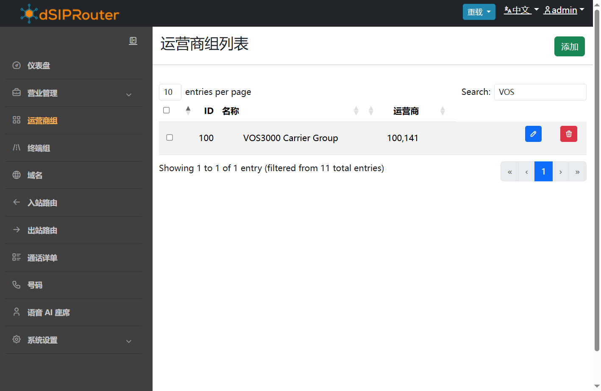
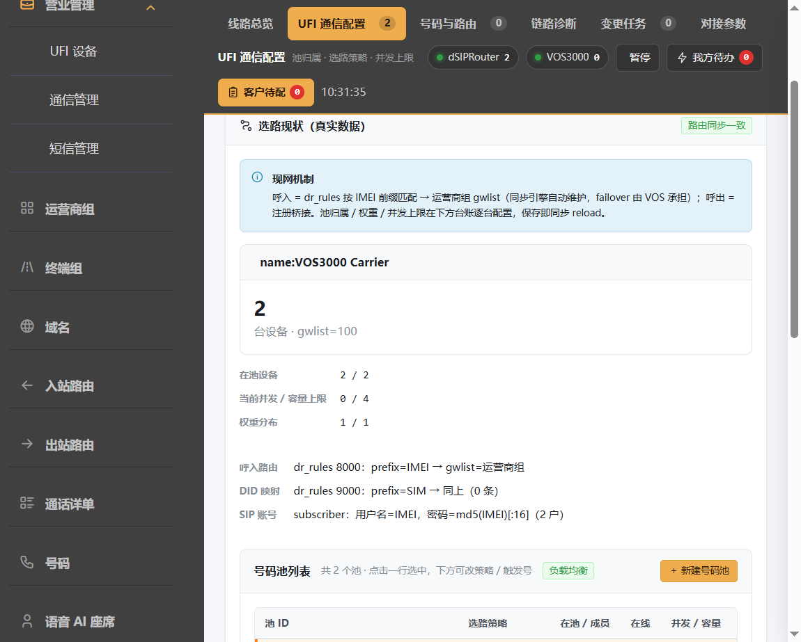
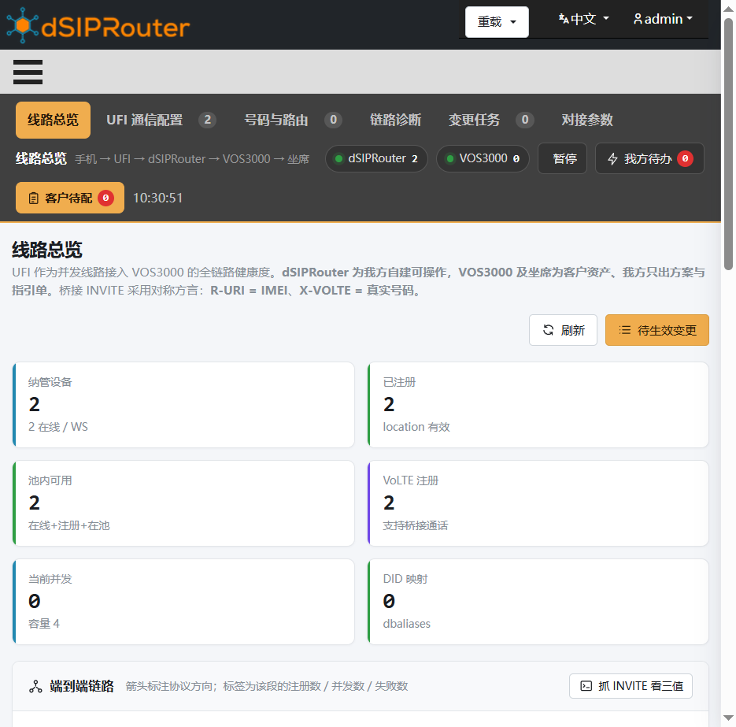
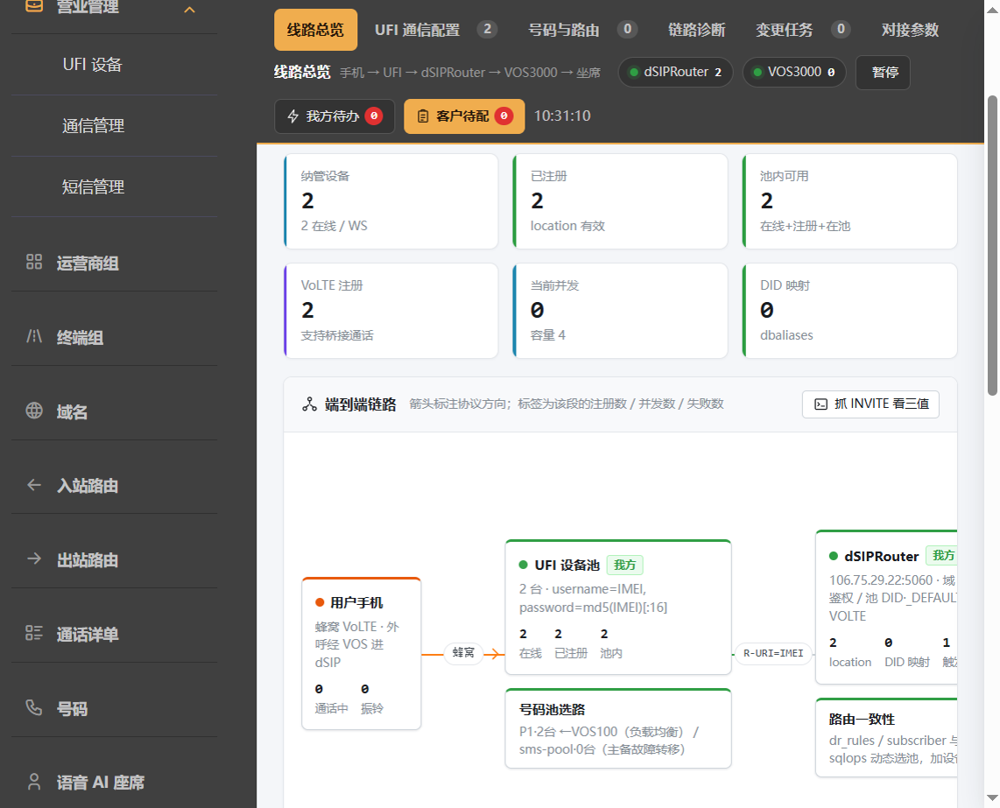
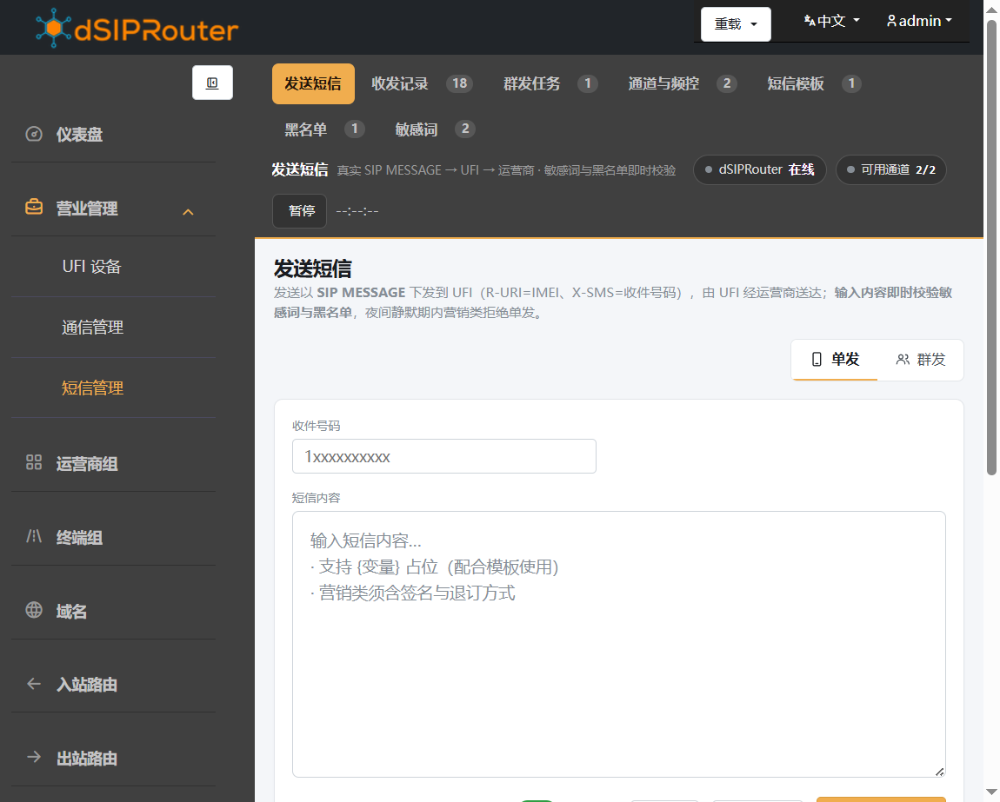

指导管理员在 dSIPRouter 管理台完成运营商对接、UFI 号码池、外呼任意号码、短信通道等配置。覆盖四个主页面，并说明客户 VOS3000 侧需配合的操作。
登录 https://ufi.mineo.top/ 后，以下四个入口覆盖「对接 VOS + 管 UFI 通话/短信」的日常工作：
登记客户 VOS3000 为 type=8 网关（IP 认证）。多 VOS 时每个系统一条。
/carriergroups
号码池、选路策略、触发号、任意被叫绑定 VOS、设备入池、号码映射。
/ufi-callcenter
通信管理默认「线路总览」：实时看注册、池、VOS 认证、路由一致性。
/ufi-callcenter#topo
经 UFI 池发 SIP MESSAGE / 群发任务、模板、黑名单与频控。
/ufi-sms
| 角色 | 系统 | 典型操作 |
|---|---|---|
| 我方 | dSIPRouter | 运营商组、号码池、设备入池、IP 认证 address、短信任务 |
| 客户 | VOS3000 | 路由网关「dsip接入」前缀通配、话机 DIDs、坐席示闲 |
0,1,400,800,9（勿逐号）；网关组不能为空。
/carriergroups侧栏 运营商组。把客户 VOS3000 登记为 dSIP 可信任的运营商网关，供 UFI 落地与外呼进线识别。

VOS3000 Carrier）。每套 VOS 建一个运营商组/网关。通信管理里：P1 勾选 VOS#100，P2 勾选 VOS#101；各池 UFI 设备的 carrier 选同一 gwid。
/ufi-callcenter侧栏 营业管理 → 通信管理。顶部 Tab：
| Tab | 用途 |
|---|---|
| 线路总览 | 见第 6 章（#topo） |
| UFI 通信配置 | 号码池、策略、触发号、任意被叫、设备台账 |
| 号码与路由 | dbaliases 绑定、VOS 前缀指引、路由一致性 |
| 链路诊断 | 排障速查 |
| 变更任务 | 我方待办 / 客户指引单 |
| 对接参数 | 快照与参数说明 |

P2，选策略（轮询 / 主备 / 负载）。dbaliases（别名 → IMEI）。dr_rules / subscriber 与号码池一致。可用「新增通信配置向导」：选 IMEI、SIM、池、carrier → 一键入池并同步路由。设备也可在 UFI 设备 模块上电自动纳管后再来划池。
/ufi-callcenter#topo通信管理打开后默认即本页。数据来自实时接口 /api/v1/ufi/comm/topo，与运营商组、号码池、设备注册联动（约 10 秒刷新）。


| 节点 | 正常表现 | 异常时 |
|---|---|---|
| UFI 设备池 | 在线≈注册≈池内可用 | 注册为 0 → 查 subscriber / 网络 |
| dSIPRouter | 路由一致性绿；触发号与配置一致 | 提示缺 subscriber/规则 → 点同步路由 |
| VOS | IP 认证「port=0」；已绑任意被叫池 | 未放行 → 查 address；未绑定 → 回通信配置勾选 |
| 线路承载 | 并发 ≤ 容量 | 长期打满 → 加设备或调 max_concurrent |
点 抓 INVITE 看三值 可查看当前桥接方言示例：R-URI=IMEI、X-VOLTE=真实被叫、请求域=本机。
数据源：/ufi/comm/topo · 同步 … 表示已加载真实配置；若仍见写死旧 IP，请 Ctrl+F5 强刷。/ufi-sms侧栏进入短信中心。UFI 号码池同时作为短信通道：平台下发 SIP MESSAGE（R-URI=IMEI，X-SMS=对端号码），由 UFI 经蜂窝送达。

max_concurrent。以下在 客户 VOS 管理界面操作。通信管理「变更任务」可生成正式指引单发给客户。
0,1,400,800,9（或 1,0,400,800）。不要填完整 11 位被叫白名单。话机管理 → 分机（如 1002）→ DIDs 追加 SIM/IMEI（保留原有号码，逗号分隔）。
对接/落地到 dSIP 使用 IP 认证；dSIP 侧 address 对该 VOS IP 放行且 port=0。
| # | 用例 | 期望 | 查看位置 |
|---|---|---|---|
| 1 | UFI 注册 | location 有 IMEI | #topo KPI「已注册」 |
| 2 | 坐席外呼任意手机 | 接通或正常振铃；非 500/无可用路由 | VOS CDR + #topo 并发 |
| 3 | 第二套 VOS（若有） | 进对应池，不串池 | 通信配置「VOS x 任意」标记 |
| 4 | 短信单发 | 收发记录成功 | /ufi-sms 记录 |
| 5 | 来显 | 被叫侧看到真实主叫/被叫而非裸 IMEI | 手机实机 + X-VOLTE |
选池日志关键字（kamailio）： UFI VOS#100 pool P1 for callee … ← 按 VOS 进池 UFI pool select: pool=P1 … → <IMEI> UFI bridge: X-VOLTE append → <被叫>
| 现象 | 多半原因 | 处理 |
|---|---|---|
| VOS CDR「无可用路由」 | 前缀仍是逐号 | 客户改通配前缀并应用 |
| Server Internal Error(500) | 未绑任意被叫 / 无默认池 | 通信配置勾选对应 VOS；确认 UFI 在线在池 |
| 应用一直转圈 / NPE | 路由网关「网关组」为空 | 客户补网关组后重应用 |
| 触发号删不掉 | 旧版种子回写（已修） | 强刷后保存应整表覆盖；仍异常联系我方 |
| UFI 全不注册 | subscriber / 密码 / 网络 | 重跑开户或同步路由；查 #topo 注册数 |
| 来显变成 IMEI | X-VOLTE 未带上 | 查桥接日志；确认走 UFI 池而非裸 drouting |
| 短信失败 | 通道离线 / 敏感词 / 频控 | 短信中心记录原因；检查池内设备 |
| #topo 数据不像现网 | 浏览器缓存 | Ctrl+F5；看图例是否含 /ufi/comm/topo |